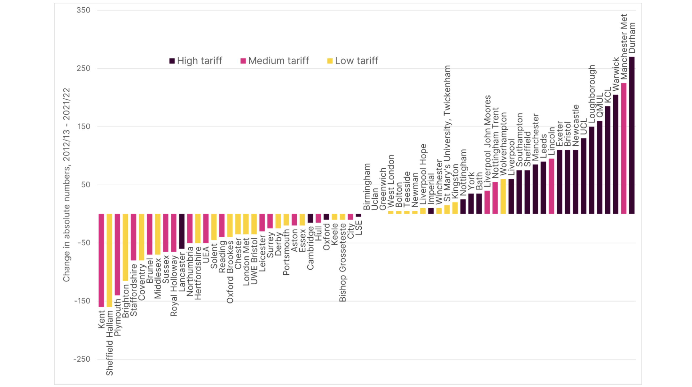
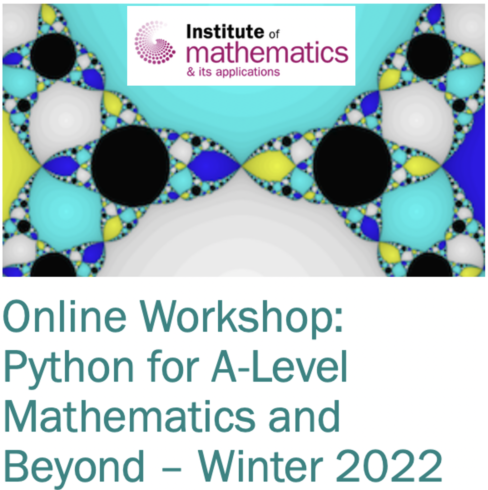

Impact of Schools Liaison

|
Schools Liaison
If you would like me to come and give a talk at your school/college please contact
me via email. I do talks for both high school and primary school.
A list of schools visited and some feedback can be seen by clicking on the tabs above.
Alternatively, we run several workshops here at Loughborough. |
 |
IMA Festival 2014